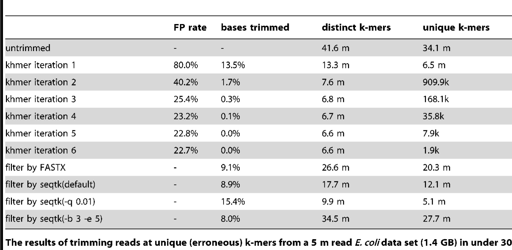
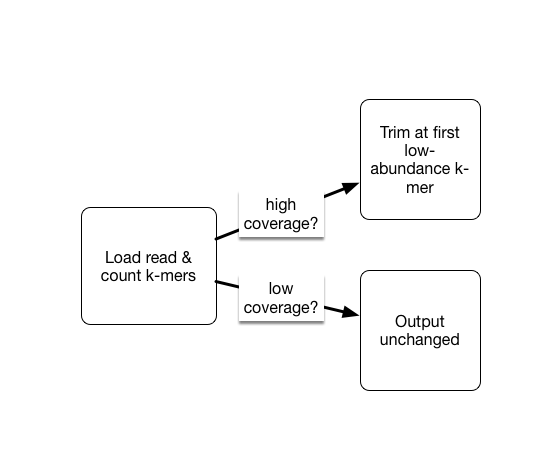

Quality Control the Data
If you're starting a new work session on FARM, be sure to follow the instructions here.
After downloading sequencing data, the next step in many pipelines is to perform quality control trimming on the reads. However, deciding when and how to trim data is pipeline dependent. Below, we define a few types of quality control and explore a use cases and how trimming recommendations may change with different applications. Although this project focuses on metagenomic sequencing, we include other applications in this discussion.
Types of Quality Control
- Adapter and barcode trimming: Adapter sequences are added to a sample library to aid in the physical process of sequencing. They are ubiquitous within a certain chemistry, and so are present across all sequenced samples. Barcodes are unique nucleotide sequences used to identify a specific sample when multiple samples are sequenced in a single lane. After barcoded samples are separated from one another in a process called demultiplexing, barcodes are no longer needed in a sequence. It is generally a good idea to remove adapters and barcodes from sequencing samples before proceeding with any downstream application. However, if you are using a pipeline that involves matching between reads and a quality reference, you may get similar results with or without adapter trimming. For quick estimation
- Quality trimming: Quality trimming removes low-quality bases from sequences reads. The user can set the stringency cut off for "low quality" by indicating a phred score at which to trim.
- K-mer trimming: K-mer trimming removes k-mers that occur very few times in a sequencing dataset. In reads with sufficient sequencing depth, we expect real k-mers to occur multiple times. When a single sequencing error occurs in a read, this produces k erroneous k-mers. K-mer trimming trims a read to remove all of these k-mers. K-mer trimming does not rely on information from the sequencer like phred scores, but instead on the biological signal in the reads themselves.
When and how to trim?
Trimming is a balance of removing artificial or incorrect nucleotides and retaining true nucleotides in sequencing data. What and when to trim therefore changes with the sequencing application, and with the sequencing data itself. Below we explore some trimming use cases to help develop an intuition for what type of trimming is necessary and when.
- Single-species genomic sequencing for assembly: Let's imagine we have just sequenced an Escherichia coli isolate with 100X coverage and would like to assemble the isolate. We would first want to remove adapters and barcodes to prevent these sequences from ending up in our final assembly. Then, stringent quality and k-mer trimming may be appropriate, because we have high coverage data; even if we were to stringently trim and were only left with 50% of our original number of reads, we would still have 50X coverage of very high quality data. 50X coverage is sufficient to acheive a good bacterial assembly in most cases.
- de novo RNA-sequencing assembly Now let's imagine we have sequenced the transcriptome of our favorite species which does not currently have a reference transcriptome. Because RNA transcripts have different abundance profiles, we can't use average coverage in the same way as we used it for single-species genomic sequencing. We need to be more careful when we k-mer and error trim so as not to accidentally remove low-abundance reads that represent true transcripts. We would likely use light quality trimming (e.g. a phred score of ~5). For k-mer trimming, we would only trim reads that contain high-abundance k-mers.
- Metagenome de novo assembly Trimming metagenomic reads for de novo assembly is similar to trimming RNA-sequencing reads for de novo transcriptome assembly. Because there are often low-abundance organisms that have low-coverage in our sequencing datasets, we need to be careful not to accidently remove these during trimming.
- Metagenome read mapping In referenced-based analyses including mapping of metagenomic reads to a set of reference genomes, reads will often map even when they contain adapters and barcodes. However, in some cases, the presence of adapters and barcodes does prevent mapping, so it is safer to remove all barcodes and adapters.
References about trimming
Many scientific studies have explored the trimming parameter space in an effort to make recommendations for different applications. We include some of these studies below.
- On the optimal trimming of high-throughput mRNA sequence data
- An Extensive Evaluation of Read Trimming Effects on Illumina NGS Data Analysis
Quality and Adapter trimming with Fastp
We will use fastp to do quality trimming of our reads.
In the Downloading Data Module, we saw using FastQC that the Illumina Universal Adapter was present in our samples.

We also saw that the sequence read quality dropped dramatically toward the end of the read.

We will remove both of these sequences using fastp.
Fastp also creates its own FastQC-style html reports for the files that we can look at after running.
Run fastp
Reminder, make sure you've followed the Starting a Work Session steps to get your Farm session set up.
You should be within your dib_rotation conda environment.
Install fastp:
mamba install -y fastp
We can now trim our data! Let's set up our directory structure:
cd ~/2020_rotation_project
mkdir -p trim
cd trim
Run fastp on the SRR1976948 sample with the following command:
fastp --in1 ../raw_data/SRR1976948_1.fastq.gz \
--in2 ../raw_data/SRR1976948_2.fastq.gz \
--out1 SRR1976948_1.trim.fastq.gz \
--out2 SRR1976948_2.trim.fastq.gz \
--detect_adapter_for_pe \
--qualified_quality_phred 4 \
--length_required 31 --correction \
--json SRR1976948.trim.json \
--html SRR1976948.trim.html
Command Breakdown
--in1,--in2- the read1 and read2 input file names--out1,--out2- the read1 and read2 output file names--detect_adapter_for_pe- Auto detect the adapters for our paired end (PE) reads, and remove them during trimming--length_required- discard reads shorter thanlength_requiredparamter (default is 15)--correction- enable base correction if the paired end reads overlap (only for PE data),--qualified_quality_phred- the quality value that a base is qualified. Default 15 means phred quality >=Q15 is qualified. (int [=15])--html,--json- file name for the fastp trimming report printed to html and/or json format
We change the Phred quality score cutoff to 4 to be more lenient in our trimming.
Recall from our FastQC lesson that a quality score of 10 indicates a 1 in 10 chance that the base is inaccurate.
A score of 20 is a 1 in 100 chance that the base is inaccurate. 30 is 1 in 1,000. And 40 in 1 in 10,000.
By using a score of 4, we are more likely to keep data that has a high probability of being accurate.
This is especially important in a metagenomics context where using stringent trimming may discard reads from organisms that are low abundance.
As done in downloading sequencing data, you can use scp to copy the html report to your computer.
Make sure you're running this command from your own computer, not from farm.
scp -i /path/to/key/file username@farm.cse.ucdavis.edu:~/2020_rotation_project/trim/*.html ./
If you're on a mac using zsh, you may need to replace the scp with noglob scp in the command above.
If you're on windows, you may need to move the the files from the download location on your Linux shell over to the windows side of your computer before opening.
Once the file is on your local computer, double click on it and it will open in your browser. You can now explore the fastp trimming report.
Why (or why not) do k-mer trimming?
Even after quality trimming with fastp, our reads will still contain errors. Why?
First, fastp trims based solely on the quality score, which is a statistical statement about the correctness of a base - a Q score of 30 means that, of 1000 bases with that Q score, 1 of those bases will be wrong. So, a base can have a high Q score and still be wrong (and many bases will have a low Q score and still be correct)!
Second, we trimmed very lightly - only bases that had a very low quality were removed. This was intentional because we want to retain as much coverage as possible for our downstream techniques (many of which do not suffer too much if some errors remain).
An alternative to trimming based on the quality scores is to trim based on k-mer abundance - this is known as k-mer spectral error trimming. K-mer spectral error trimming always beats quality score trimming in terms of eliminating errors; e.g. look at this table from Zhang et al., 2014:

The basic logic is this: if you see low abundance k-mers in a high coverage data set, those k-mers are almost certainly the result of errors. (Caveat: strain variation could also create them.)
In metatranscriptomic data sets we do have the problem that we may have very low and very high coverage data. So we don’t necessarily want to get rid of all low-abundance k-mers, because they may represent truly low abundance (but useful) data.
As part of the khmer project in our lab, we have developed an approach that sorts reads into high abundance and low abundance reads, and only error trims the high abundance reads.

This does mean that many errors may get left in the data set, because we have no way of figuring out if they are errors or simply low coverage, but that’s OK (and you can always trim them off if you really care).
Kmer trimming with khmer
Next, let's k-mer trim our data. This will take 20GB of RAM and a few hours to complete. We didn't ask for quite that much RAM when we initially got our computer, so we'll need a different one.
First, exit your current srun session
exit
Next, use this srun command to get a larger computer that can handle the k-mer trimming analysis:
srun -p bmh -J khmer -t 20:00:00 --mem=21gb -c 1 --pty bash
Since we changed computers, our conda environment was automatically deactivated.
Activate your project environment again:
conda activate dib_rotation
Install khmer
We need to install the software we will use to perform k-mer trimming, khmer.
Make sure you've activated the conda environment you are using for this project before running this command!
mamba install -y khmer
Using khmer for k-mer trimming
Once khmer is installed, we can use it for k-mer trimming.
Let's get our files and directories set up:
cd ~/2020_rotation_project
mkdir -p abundtrim
cd abundtrim
Now we can run k-mer trimming! The first line of this command interleaves our paired end reads, putting them in one file where forward and reverse reads alternate on each line. The second line of this command performs the k-mer trimming.
Note that these commands are connected by the pipe (|) character.
This character means that the first half of the command (before the |) is executed first, and the output is passed ("piped") to the second half of the command (after the |).
interleave-reads.py ../trim/SRR1976948_1.trim.fastq.gz ../trim/SRR1976948_2.trim.fastq.gz | \
trim-low-abund.py --gzip -C 3 -Z 18 -M 20e9 -V - -o SRR1976948.abundtrim.fq.gz
Note: Here, we are referencing the trimmed files using a relative path:
../trim/. That is, to access these files, we go up one directory level (..), then descend into thetrimfolder.
Assess changes in kmer abundance
To see how many k-mers we removed, you can examine the distribution as above,
or use the unique-kmers.py script. Let's compare kmers for one sample.
unique-kmers.py ../trim/SRR1976948_1.trim.fastq.gz ../trim/SRR1976948_2.trim.fastq.gz
unique-kmers.py SRR1976948.abundtrim.fq.gz
Note, here we are using a relative path,
../trim/. That is, to access theSRR1976948_*.trim.fastq.gzfiles, we go up one directory (../), then down intotrim.
The raw adapter-trimmed inputs have an estimated 442441435 unique 32-mers.
Estimated number of unique 32-mers in ../trim/SRR1976948_1.trim.fastq.gz: 271670733
Estimated number of unique 32-mers in ../trim/SRR1976948_2.trim.fastq.gz: 370246495
Total estimated number of unique 32-mers: 442441435
The k-mer trimmed file (kmer output) has an estimated unique 32-mers.
Estimated number of unique 32-mers in SRR1976948.kmertrim.fq.gz: 329577970
Total estimated number of unique 32-mers: 329577970
Note that the second number is smaller than the first, with over 112m k-mers removed.